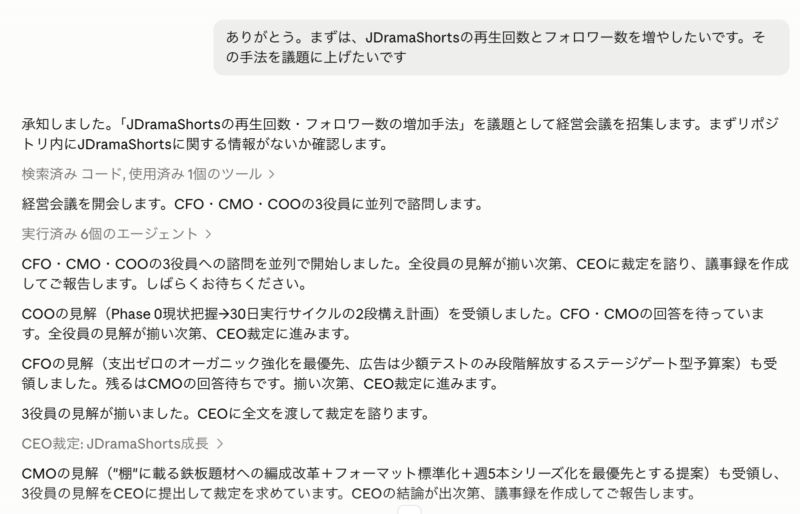
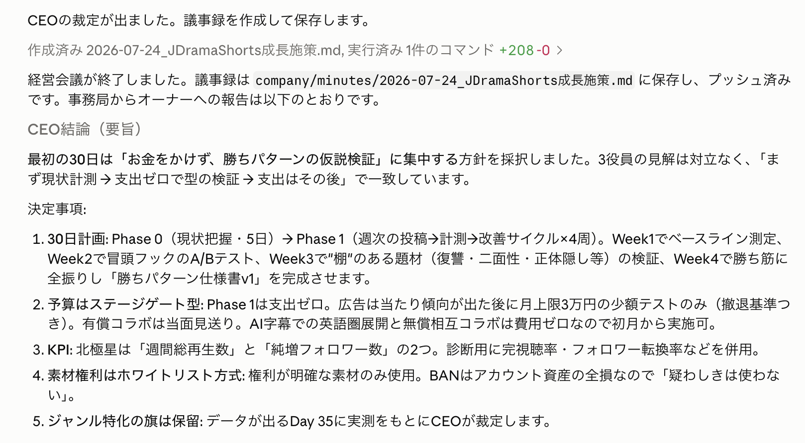
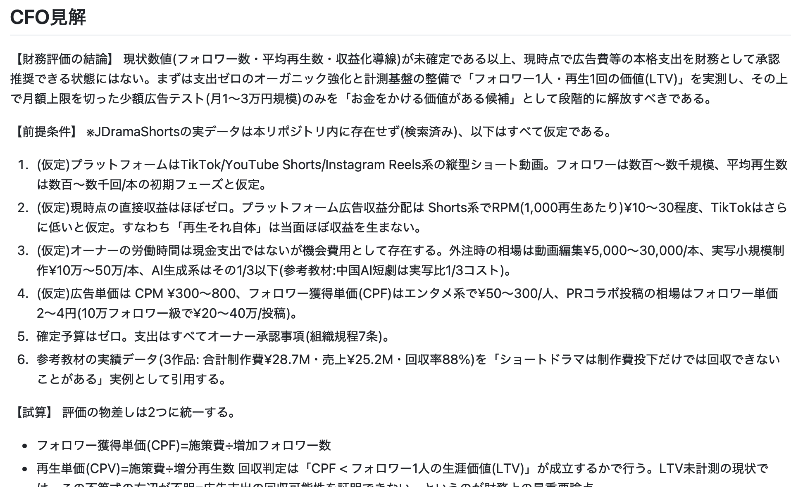
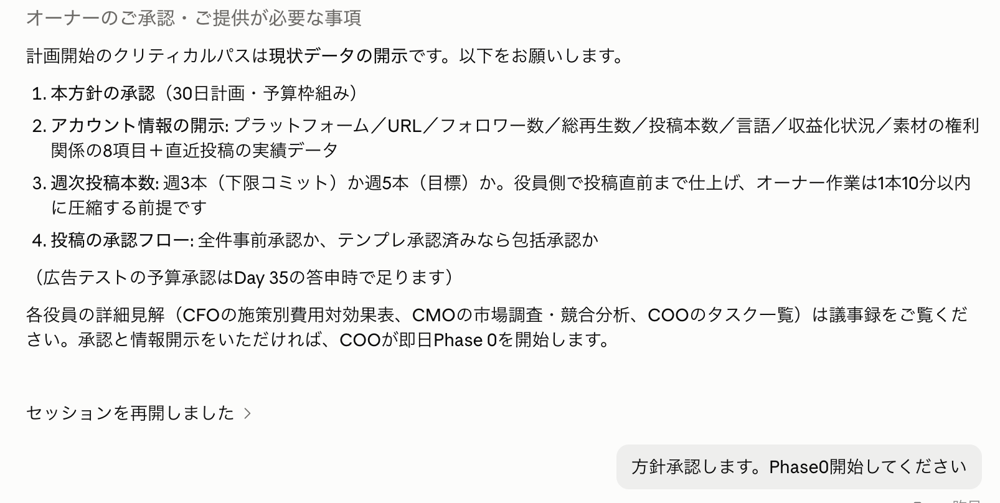
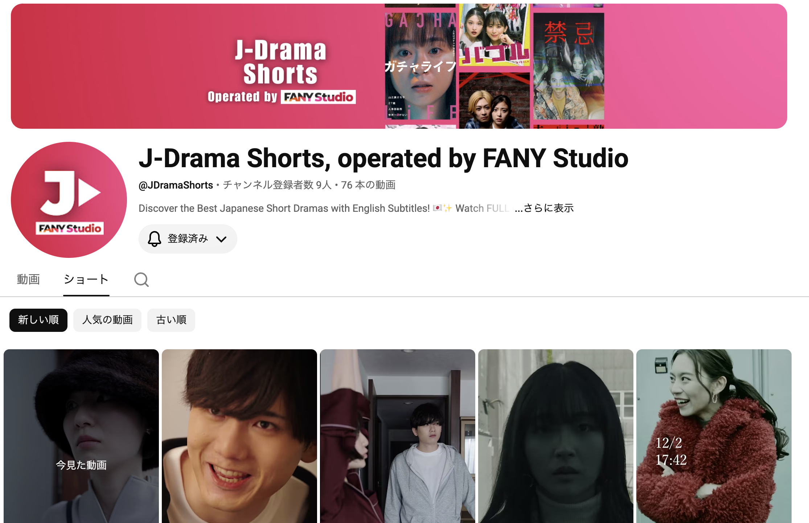
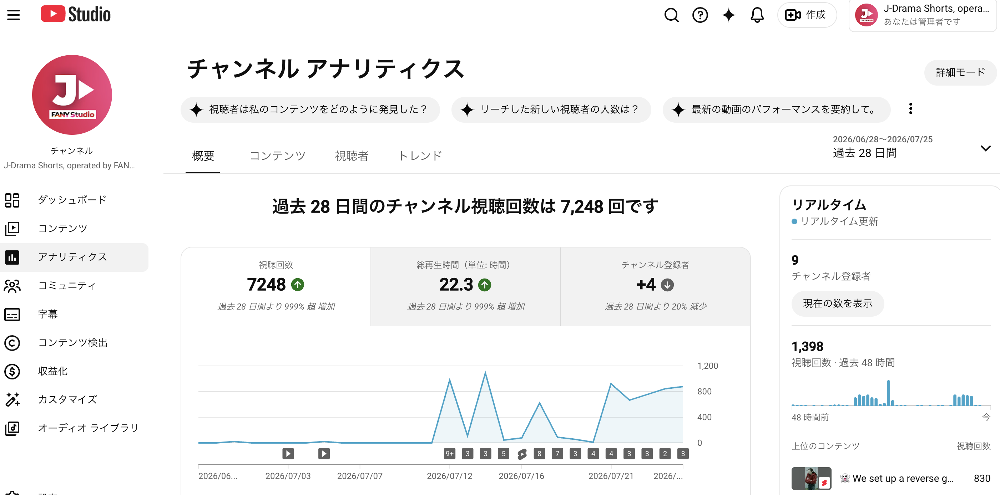
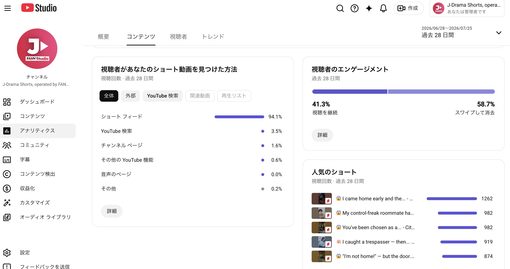
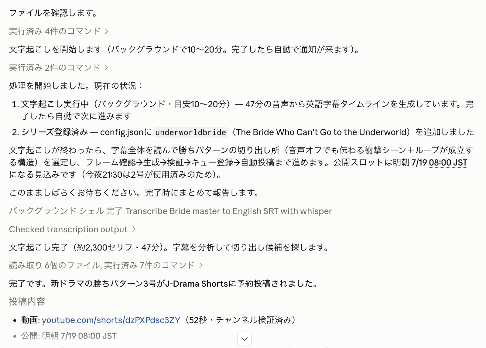
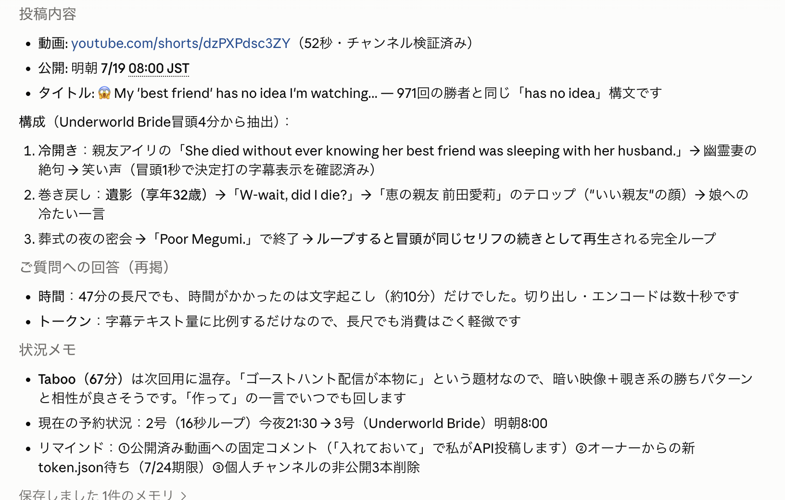
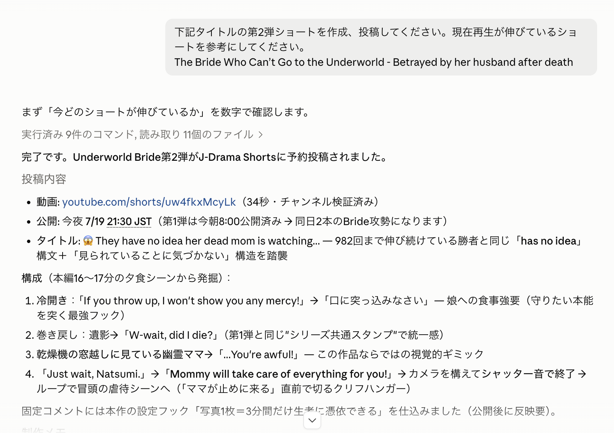

覚えて帰って欲しい2つ
- AI会社は「作れる」：AIに役割を与えて束ねれば、それはもう組織です。人間1人＋AI社員たちの会社を、今日この場で"実物"として見せます。
- 分析も行動も、自動で回る：実ミッション「JDrama Shortsのフォロワー・再生数増」で、データ分析 → 打ち手の決定 → 切り抜き制作 → 投稿 → 計測、が実際に回っている工程を公開します。
60分タイムテーブル
| 区切り | 時間 | 内容 | キーワード |
|---|---|---|---|
| 1 | 0–6分 | 振り返り＋今日の問い | AIで会社は作れるのか？ |
| 2 | 6–18分 | まず組織を作ってみる ── セッション「AI企業の組織構造」 | 役割を書けば部門になる・議事録 |
| 3 | 18–36分 | ★ 実ミッション：JDrama Shortsのフォロワー・再生数増 | 登録者5人からの実戦 |
| 4 | 36–48分 | 分析・行動を自動で ── パイプラインの中身 | 切り抜き・自動投稿・計測ループ |
| 5 | 48–55分 | じゃあ人間は何をする？ | 決める仕事は2つだけ |
| 6 | 55–60分 | クロージング | 君のAI会社の、最初のミッションは？ |
第1部：振り返り＋今日の問い
第1回「作る」、第2回「売る」。今日は、その2つを実際に載せる"箱"＝会社をAIで作ります。
1-1ここまでの2回を3行で
- 第1回（作る）：AIで制作コストが崩壊。個人がIP＝資産を作れる ── それがOPC（一人会社）
- 第2回（売る）：売れるには公式がある ── 棚・盲点・分解。1本は10個のビジネスになる
- そして2回とも繰り返してきた言葉：「AIは道具じゃなく、チーム」
1-2今日の問い
答えを先に言います。作れます。もう作りました。動いています。
→ 今日はスライドではなく、その会社の"実物"を見せながら進めます。
第2部：まず組織を作ってみる
事例：セッション「AI企業の組織構造」── 会社づくりの最初の一歩は、役割を"文章で書く"こと。
2-1設立の瞬間 ── たった3文で会社ができた
会社は何でできているでしょうか？ ビルでも資本金でもありません。「役割」でできています。── だとすれば、役割をAIに与えれば組織は作れるはずです。実際にやってみました。これが設立の瞬間の実物です：
2-2できあがった組織 ── オーナー1人＋AI役員4名
この3文に対して、AIが組織と指示系統を設計して返してきました。これも実物です：
AIカンパニーの組織と指示系統を作成し、claude/ai-company-organization-fu49kg ブランチにプッシュしました。
あなたはオーナー（株主）として最終権限を持ち、メインセッション（私）は社長室・事務局として指示を適切な役員に振り分ける役割です。事務局自身は経営判断をしません。
- 役員エージェント4名（
ceo.md/coo.md/cfo.md/cmo.md）── 各役員の職務・行動原則・回答フォーマットを定義。専門領域外には踏み込まず、担当役員に差し戻すルール。 - 組織規程（
company/組織規程.md）── 組織図、指示系統（指示はCEO起点・報告は逆順）、決裁権限表（何をCEOが決め、何がオーナーの承認事項か）、会議体を明文化。事業の決定・支出・対外公開は必ずオーナー承認。 - 経営会議スキル（
/keiei-kaigi 議題）── CFO・CMO・COOが並列で専門見解を出し、CEOが結論を裁定、議事録をcompany/minutes/に自動保存。
組織の作り方＝「役割と権限を文章で書く」だけ
人間の会社の定款・就業規則にあたるものが、AI会社では役員エージェントの定義ファイルと組織規程です。「CFOは財務の専門見解だけを出す。専門外は担当役員に差し戻す」「支出と対外公開はオーナー承認」── 役割と権限を言葉で書いた瞬間、組織が立ち上がります。会社設立の登記より簡単です。
2-3会議もする ── 経営会議の実物（討議 → 裁定・議事録 → 承認）
オーナーが議題を投げるだけで経営会議が開かれます。実際の会議を、3つの段階で見てみましょう。議題は「JDramaShortsの再生回数・フォロワー数の増加手法」── そう、この後の第3部で見せる実ミッションそのものです。

↓

📄 作成された議事録（実物）を見る ── 2026-07-24_JDramaShorts成長施策.md

↓

Point
ここまでで気づいてほしいこと：組織を作ること自体には、お金が1円もかかっていません。かかったのは「役割を言葉にする」思考だけです。しかも設立時点では「何をするかはまだ決まってない」── それでも組織は作れます。でも組織は、動かして初めて会社になります。次は実戦です。
→ この会社に、本物のミッションを与えてみました。
第3部：★ 実ミッション ── JDrama Shortsのフォロワー・再生数増
練習問題ではありません。実在のYouTubeチャンネルの成長を、このAI会社に任せています。
3-1ミッションの現場：youtube.com/@JDramaShorts
JDrama Shorts＝FANY Studioが運営する、英語圏向け日本ショートドラマのYouTubeチャンネルです。自社保有作品なので、切り抜きも再編集も多プラットフォーム展開もすべて自由です。
登録者：スタート時 → 現在（2026年7月）
動画本数：AI会社の運用開始後に+62本
過去28日の視聴回数 ── 前の28日比 999%超の増加

なぜ「登録者5人」を隠さず見せるのか
かっこいい成功例を見せるためではありません。ゼロからの立ち上げをAI会社でやると何が起きるかを、リアルタイムで見せるためです。第2回で言った「まず棚に置いて反応を見る」を、講師自身が実践している現場です。
3-2CMO（マーケティング役員AI）の診断 ── なぜ再生されていないか
ミッションはオーナーから経営会議に下ります。まず動いたのはCMO（マーケティング担当役員AI）の診断です。結論：
- 再生数が伸びないのは内容の問題ではなく、アルゴリズムのテスト配信に届く母数に達していない段階の問題
- Shortsは初速で数百人にテスト表示され、完視聴されると次の層に拡張される ── つまり量と継続、そして最初の1.5秒が勝負
- 打ち手：①毎日投稿で「型」を学習させる ②サムネ・タイトルを英語圏向けに転換 ③Shorts→本編への導線 ④TikTok等への横展開
- KPI（北極星）は経営会議で決定済み：週間総再生数と純増フォロワー数の2つ ── 第2部で見た議事録の決定事項が、そのままここで動いています


3-3COO（実行統括AI）の工程 ── 切り抜きの実物
診断を受けて、COO配下の制作工程が動きます。1本のマスター動画（本編）から、英語字幕付き本編・連載Part 1/2・単発バイラル切り抜きを生成します。連載型は末尾を必ず「引き」で切り、単発型は最も感情が動く15〜30秒だけを抜きます。
| フォーマット | 作り方 | 長さ | 役割 |
|---|---|---|---|
| 連載型（Part 1–N） | 本編を話の切れ目で分割。末尾は必ず「引き」 | 60–90秒 | 完視聴・リピート・登録 |
| 単発バイラル型 | 最も感情が動く15–30秒だけ。冒頭にフックテキスト | 15–30秒 | 新規リーチ |
→ さて、ここからが今日の本題です。この工程、人間はほとんど手を動かしていません。
第4部：分析・行動を自動で ── パイプラインの中身
「AIに聞く」と「AIが動く」は別物です。この会社では、分析→制作→投稿→計測が工程として自動で回ります。
4-11本のマスター動画が投稿になるまで（自動化工程）
↓
↓
↓
↓
4-2実際に回っているところ ── 指示1行から予約投稿まで（実物ログ）
この工程が実際に回っている画面を、そのまま見せます。第3部で埋め込んだ2本の切り抜きは、まさにこのログから生まれたものです。

↓

↓

Point
「分析→行動」が閉じたループになっている
多くの人のAI活用は「聞いて、答えをもらって、終わり」です。この会社が違うのは、データを読む→打ち手を決める→作る→出す→また読む、が工程としてつながっていることです。第2回で学んだ「計測ループ」を、AI社員たちが毎週自動で回しています。
第5部：じゃあ人間は何をする？
全部自動なら、人間は要らないのでしょうか？ ── 逆です。この会社で人間の判断が濃く残る場所こそ、君たちの職能です。
5-1この会社で人間がやっている仕事
気づいてほしいこと
第2回の言葉を思い出してください ──「ボタンを押すだけの労働者から、制作チームのボスへ」。このAI会社の人間は、CEOですらなくオーナー（株主）です。経営はCEO AIがやり、人間はミッションと承認と責任だけを持ちます。手はAIが動かします。決めるのは人間です。シリーズでずっと話してきたことの、これが実装形です。
5-2君が作るなら ── 最小構成は3行
難しく考えなくて大丈夫です。AI会社の設立に必要なのは、実はこれだけです：
- ① ミッションを1行で書く（例：「私のTikTokのフォロワーを増やせ」）
- ② 部門を2つ作る（分析係AIと制作係AIに、役割を文章で渡す）
- ③ 週1回、数字を見て1つだけ変える（計測ループの最小形）
登記も資本金も要りません。今夜から作れます。
クロージング ── 最後の問い
3回の旅をまとめます：
| 回 | テーマ | 持ち帰り |
|---|---|---|
| 第1回 | 作る | AIでコスト崩壊。個人がIPを作れる ── OPCという選択肢 |
| 第2回 | 売る | 棚・盲点・分解。1本を10個のビジネスに |
| 第3回 | 会社にする | 役割を書けばAIは組織になる。分析も行動も自動で回る ── 実物を見た |
中国のOPCの話も、月営収300万元の話も、今日でただのニュースではなくなったはずです。同じ構造のものが、この教室の隣で動いているのですから。
最後の問い
君のAI会社の、
最初のミッションは何？
1行で書けたら、その会社はもう設立できます。今夜、ぜひ作ってみてください。
持ち帰り
作る × 売る × 会社にする ＝ OPCの完成形
第1回 × 第2回 × 第3回 ── シリーズの答え
AI会社は作れる ── 役割と権限を文章で書けば、AIは部門になります。設立コストは0円です。
分析と行動を"ループ"でつなぐ ── 聞いて終わりではなく、データ→打ち手→制作→投稿→計測を工程として自動で回します。
人間の仕事はボス業 ── ミッション設定・瞬間の選定・言葉の凝縮・最終責任。決めるのは人間、手を動かすのはAIです。
実例：JDrama Shorts（登録者5人・動画14本からの実戦）を、オーナー（人間）1人＋AI役員4名（CEO・COO・CFO・CMO）の会社が運用中です。
運用開始後、動画は76本・過去28日の視聴は7,248回（999%超増）になりました。
君のAI会社も、ミッション1行から今夜作れます。
よくある質問
Q.プログラミングができないと、AI会社は作れませんか？
Q.AI社員同士って、本当に"会議"するんですか？
Q.登録者5人からで、恥ずかしくないんですか？
Q.維持費はかかりますか？
Q.自分もJDrama Shortsみたいな運用をやってみたいです。
出典
シリーズ教材
今回の実例
- JDrama Shorts（youtube.com/@JDramaShorts）── FANY Studio運営・英語圏向け日本ショートドラマチャンネル
- J-Drama Shorts 成長プレイブック & 制作ハンドブック（社内ドキュメント・2026年7月版）── 診断・打ち手・制作ワークフロー・計測ループの出典
- セッション「AI企業の組織構造」── AI会社の設立プロンプト・組織図・役員エージェント定義・組織規程・経営会議スキル（本文の"セッション画面"は同セッションの実際のやりとりを再現したもの）
- 経営会議 議事録（実物）：2026-07-24_JDramaShorts成長施策.md（company/minutes/ に自動保存されたもの）
参考（Shorts運用の外部ソース）
- OutlierKit ── Vertical Micro Drama Playbook 2026
- vidIQ ── Understanding the YouTube Algorithm 2026
- Miraflow ── YouTube Shorts Best Practices 2026
※チャンネルの数字はスタート時点のもの。視聴データの詳細は運用中のため一部ぼかして掲載。